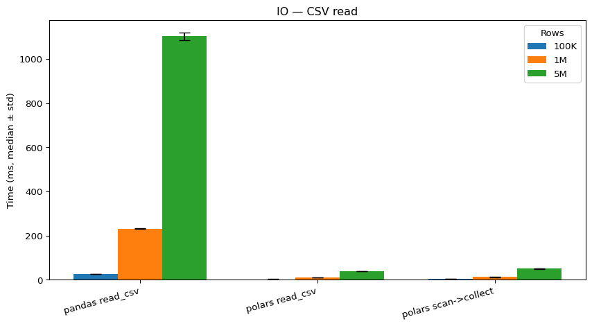

import numpy as np
import pandas as pdCute Pandas and Fast Polars
working in science
analysis
programming
Data analysis - the cookbook
If you analyse data using python, most likely you have developed some good out-of-the box routines you can apply to most of your datasets. Probably you start with a manual inspection of the data types, settle on a suitable approach to read in files, follow along with some sanity checks and solid data visualization to get a feeling for the data at hand. Most likely, though, you start by typing the following:
Both NumPy and Pandas reliably make it to the top of the list of popular python libraries. NumPy (short for numerical python) comes with a lot of inbuilt capabilities for handling arrays, making it a go-to library for scientific computing and machine learning. Pandas uses these powerful array-manipulation capabitilies and introduces Series (1D) and DataFrames (2D) and allows the user to rather easily slice through the dataset in different ways, compute central tendencies or other statistical descriptors for individual columns and rows. Additionally, it quite naturally can be connected to downstream libraries such as seaborn for data visualization.
Basically all my pipelines at some point use pandas (and I am not alone with that), so it would be a huge leverage factor to speed up the storage and retrieval process regarding my data structures. Introducing: Polars.
Cute Pandas, fast Polars
I happened to come across this library a little while ago and was intrigued by their promise: similar capabilites as Pandas, but at a fraction of the time needed for execution. The edge comes from two major factors: First, the library is written in Rust, known to rival C, in particular when it comes to parallelization. Second, it introduces lazy evaluation (computations are only executed when needed) and query optimization (we will come to that). On their website, [pola.rs][(https://pola.rs/)] (I do find it funny…), they claim a time advantage over pandas for a common data wrangling operation of roughly 90-fold. If that is not enough to get you interested, you never had to run you pipeline over night (or several days) and reading further might be a genuine waste of time for you. Anyway, I wanted to see whether I get similar results. Some of the most typical operations you want to apply to your data concern I/O (input/output, so the reading and writing of files), computation of some sort with the data loaded in memory and the transformation of the dataset (e.g., to tidy format). I created three datasets with random numbers across three columns and 100.000, 1.000.000, or 5.000.000 rows. Obviously, there could be bigger datasets, but I daresay this should cover typical use cases. If you want to re-create this for yourself, here is the code for the random datasets:
import time, gc, os, statistics as stats
import numpy as np
import pandas as pd
# polars can be easily installed via pip install polars
import polars as pl
def make_sales(n_rows: int, out_file: str, seed: int = 42):
rng = np.random.default_rng(seed)
store_ids = rng.integers(1, 5000, size=n_rows, dtype=np.int32)
revenue = rng.lognormal(mean=5, sigma=1.0, size=n_rows).round(2)
dates = pd.to_datetime("2020-01-01") + pd.to_timedelta(
rng.integers(0, 365, size=n_rows), unit="D"
)
df = pd.DataFrame({"store_id": store_ids, "revenue": revenue, "date": dates})
df.to_csv(out_file, index=False)
return out_file
paths = [
("sales_100k.csv", 100_000),
("sales_1M.csv", 1_000_000),
("sales_5M.csv", 5_000_000),
]
generated = []
for fname, n in paths:
if not os.path.exists(fname):
make_sales(n, fname)
generated.append((fname, n))
generated[('sales_100k.csv', 100000),
('sales_1M.csv', 1000000),
('sales_5M.csv', 5000000)]The cell above will create the three example datasets in the directory from which you run the script. I admit I was not very creative (sales.csv is a pretty common toy dataset), but feel free to adapt with columns and data types more suitable for your use cases. The next step was to create a quick function to time the execution of the typical data wrangling procedures:
def timer_samples(fn, repeat=5):
import gc, time, statistics as stats
samples = []
for _ in range(repeat):
gc.collect()
t0 = time.perf_counter()
fn()
samples.append(time.perf_counter() - t0)
return {
"samples_s": samples,
"min_s": min(samples),
"median_s": stats.median(samples),
"mean_s": sum(samples)/len(samples),
"std_s": (stats.pstdev(samples) if len(samples) > 1 else 0.0),
}
def fmt_ms(sec):
return round(sec * 1000, 1)The timer function executes a function several times and returns some parameters describing the execution speed. With this, we are now ready to get into polars vs pandas specifics.
Input/Output
Using Pandas, you load datasets typically with a built-in method such as pd.read_csv(). In Polars, the same operation comes in two flavors: Either you directly read in the dataset (eager mode) via pl.read_csv() (Polars was written with familiarity to Pandas in mind) or you use lazy mode. Here, you actually don’t directly load the dataset, but build a query plan via pl.scan_csv(). The plan can then be materialized later using the collect() command. If you immediately combine scanning and collecting, there is no advantage whatsoever, so pl.scan_csv(path).collect() does not make any sense. It shines when you combine the scanning with data wrangling procedures and collect in the end because here query optimization can make a huge difference. We get to this later. One interesting aspect about Polars is its way to parse datatypes. In Pandas, you would read in a .csv like this:
pd.read_csv(path, dtype={"integer_type": "int32"})In Polars (eager mode), you do the following:
pl.read_csv(path, dtypes={"integer_type": pl.Int32})Passing datatypes to I/O functions is good practice for a couple of reasons: You avoid surprises later on when you try to combine the values from two columns that have been assigned incompatible datatypes by under-the-hood inference of your I/O function. It also allows for memory-aware processing (Int32 allocates half the memory of Int64) which definitely comes in handy for large datasets. So, why does Polars assign the pl.Int32 type? Because it is NOT based on NumPy! Instead, it uses Apache Arrows columnar memory with its own datatypes that map cleanly to Arrow and allows for query optimization.
Filtering Operations
A typical step for any data analysis is filtering. Interested in particularly huge values? Filter. Care about cases within one standard deviation of the mean? Filter. Want to exclude outliers? Filter. Of course, both Pandas and Polars come with built-in capabilities for this. In Pandas, you can identify cases of interest by selecting a column and performing logical indexing:
df.loc[df["column1"] > 1000, ["column1", "column2", "column4"]]This command selects all rows of column 1 with a value over 1000 and returns the selected rows for columns 1, 2, and 4. In Polars, you get the same with
df.lazy()
.filter(pl.col("column1") > 1000)
.select(["column1", "column2", "column4"])
.collect()When you go for lazy mode, you might actually prefer to start with pl.scan_csv() to fully leverage Polars. For comparability, I assumed here that the dataset is already im memory.
Grouping
Often, we are interested in computing average values for certain groups within our data or compare the number of entries per category. This can be achieved by grouping operations and consecutive aggregation across the resulting groups. Here is an example for Pandas:
df.groupby("column1", as_index=False).agg(
column2_sum=("column2", "sum"),
n=("column2", "size"),
avg=("column2", "mean"))We group across the different values of column 1 and compute the sum, number of entries, and average values for column 2 for all individual values of column 1. Here is the same approach in Polars:
df.lazy()
.group_by("column1")
.agg([
pl.col("column2").sum().alias("column2_sum"),
pl.count().alias("n"),
pl.col("column2").mean().alias("column2_avg"),
])
.collect()One neat feature of Polars is the .alias() function which allows you to compute values and assign the column name directly. As you can see, the the commands can easily be stacked and due to native multi-core usage, this allows for speedy processing. If you wanted to fully leverage Polars, you start by scanning the file, listing all operations you want to execute, leave it to polars to optimize the query plan and collect in the end.
Merging and Tidying up
A last common approach is data reshaping. Many kinds of analysis require the dataset to exist in a certain format and not always is a simple transpose the answer. I implemented a simple merging and melting operation for both Pandas and Polars, now let us see how execution speed differs for the tasks outlined above. In the benchmarking, I differentiate between I/O and computation on loaded datasets but keep in mind that Polars really shines by combining scanning, computation, and collection.
Expand cell
def bench_one_dataset_sampled(path: str, repeat: int = 7):
import pandas as pd
import polars as pl
import os
if not os.path.exists(path):
raise FileNotFoundError(f"{path} not found")
# --- IO variants
def pandas_read():
return pd.read_csv(path, dtype={"store_id": "int32"}, parse_dates=["date"])
def polars_read():
return pl.read_csv(path, dtypes={"store_id": pl.Int32, "date": pl.Date})
def polars_scan_collect():
return pl.scan_csv(path, dtypes={"store_id": pl.Int32, "date": pl.Date}).collect()
io_variants = [
("IO", "pandas read_csv", pandas_read),
("IO", "polars read_csv", polars_read),
("IO", "polars scan->collect", polars_scan_collect),
]
io_rows, io_samples = [], []
for phase, variant, fn in io_variants:
res = timer_samples(fn, repeat=repeat)
io_rows.append({
"dataset": path, "phase": phase, "variant": variant,
"min_ms": fmt_ms(res["min_s"]),
"median_ms": fmt_ms(res["median_s"]),
"mean_ms": fmt_ms(res["mean_s"]),
"std_ms": fmt_ms(res["std_s"]),
"n": repeat,
})
for i, s in enumerate(res["samples_s"]):
io_samples.append({
"dataset": path, "phase": phase, "variant": variant,
"run": i+1, "ms": fmt_ms(s)
})
# Load once for compute timings
pdf = pandas_read()
pldf = polars_read()
# tiny dim table
max_store = int(pdf["store_id"].max())
dim_pd = pd.DataFrame({
"store_id": pd.Series(range(1, max_store + 1), dtype="int32"),
"region": (pd.Series(range(1, max_store + 1)) % 20).astype("int8"),
})
dim_pl = pl.DataFrame(dim_pd)
# --- Tasks
def pandas_task1():
out = (pdf.loc[pdf["revenue"] > 1000, ["store_id", "revenue", "date"]]
.assign(rev_k=lambda d: d["revenue"]/1000.0))
return float(out["rev_k"].sum())
def polars_task1_eager():
out = (pldf.filter(pl.col("revenue") > 1000)
.select(["store_id", "revenue", "date"])
.with_columns((pl.col("revenue")/1000.0).alias("rev_k")))
return float(out["rev_k"].sum())
def polars_task1_lazy():
out = (pldf.lazy()
.filter(pl.col("revenue") > 1000)
.select(["store_id", "revenue", "date"])
.with_columns((pl.col("revenue")/1000.0).alias("rev_k"))
.collect())
return float(out["rev_k"].sum())
def pandas_task2():
g = pdf.groupby("store_id", as_index=False).agg(
revenue_sum=("revenue", "sum"),
n=("revenue", "size"),
avg=("revenue", "mean"),
)
share = pdf["revenue"] / pdf["revenue"].sum()
return float(g["revenue_sum"].sum() + share.sum())
def polars_task2_eager():
g = (pldf.group_by("store_id")
.agg([
pl.col("revenue").sum().alias("revenue_sum"),
pl.count().alias("n"),
pl.col("revenue").mean().alias("avg"),
]))
df2 = pldf.with_columns((pl.col("revenue")/pl.col("revenue").sum()).alias("share"))
return float(g["revenue_sum"].sum() + df2["share"].sum())
def polars_task2_lazy():
g = (pldf.lazy()
.group_by("store_id")
.agg([
pl.col("revenue").sum().alias("revenue_sum"),
pl.count().alias("n"),
pl.col("revenue").mean().alias("avg"),
])
.collect())
df2 = (pldf.lazy()
.with_columns((pl.col("revenue")/pl.col("revenue").sum()).alias("share"))
.collect())
return float(g["revenue_sum"].sum() + df2["share"].sum())
def pandas_task3():
merged = pdf.merge(dim_pd, on="store_id", how="left")
tidy = merged.melt(id_vars=["store_id", "date", "region"],
value_vars=["revenue"],
var_name="metric", value_name="value")
return len(tidy)
def polars_task3_eager():
merged = pldf.join(dim_pl, on="store_id", how="left")
tidy = merged.melt(id_vars=["store_id", "date", "region"],
value_vars=["revenue"],
variable_name="metric", value_name="value")
return tidy.height
def polars_task3_lazy():
out = (pldf.lazy()
.join(dim_pl.lazy(), on="store_id", how="left")
.melt(id_vars=["store_id", "date", "region"],
value_vars=["revenue"],
variable_name="metric", value_name="value")
.collect())
return out.height
compute_variants = [
("Filter/Select/Transform", "pandas", pandas_task1),
("Filter/Select/Transform", "polars eager", polars_task1_eager),
("Filter/Select/Transform", "polars lazy", polars_task1_lazy),
("GroupBy & Window", "pandas", pandas_task2),
("GroupBy & Window", "polars eager", polars_task2_eager),
("GroupBy & Window", "polars lazy", polars_task2_lazy),
("Join & Melt", "pandas", pandas_task3),
("Join & Melt", "polars eager", polars_task3_eager),
("Join & Melt", "polars lazy", polars_task3_lazy),
]
comp_rows, comp_samples = [], []
for phase, variant, fn in compute_variants:
res = timer_samples(fn, repeat=repeat)
comp_rows.append({
"dataset": path, "phase": phase, "variant": variant,
"min_ms": fmt_ms(res["min_s"]),
"median_ms": fmt_ms(res["median_s"]),
"mean_ms": fmt_ms(res["mean_s"]),
"std_ms": fmt_ms(res["std_s"]),
"n": repeat,
})
for i, s in enumerate(res["samples_s"]):
comp_samples.append({
"dataset": path, "phase": phase, "variant": variant,
"run": i+1, "ms": fmt_ms(s)
})
import pandas as pd
summary_df = pd.DataFrame(io_rows + comp_rows)
samples_df = pd.DataFrame(io_samples + comp_samples)
return summary_df, samples_df
# Run the sampled benchmark for your three CSVs:
summary_list, samples_list = [], []
for fname, _ in generated:
s, smp = bench_one_dataset_sampled(fname, repeat=7)
summary_list.append(s)
samples_list.append(smp)
summary_df = pd.concat(summary_list, ignore_index=True)
samples_df = pd.concat(samples_list, ignore_index=True)
# Take a quick look
summary_df.head(), samples_df.head()( dataset phase variant min_ms \
0 sales_100k.csv IO pandas read_csv 25.5
1 sales_100k.csv IO polars read_csv 1.9
2 sales_100k.csv IO polars scan->collect 2.9
3 sales_100k.csv Filter/Select/Transform pandas 1.1
4 sales_100k.csv Filter/Select/Transform polars eager 3.5
median_ms mean_ms std_ms n
0 26.2 26.5 0.9 7
1 2.0 2.3 0.7 7
2 3.1 3.4 0.7 7
3 1.2 1.3 0.2 7
4 3.6 3.7 0.3 7 ,
dataset phase variant run ms
0 sales_100k.csv IO pandas read_csv 1 27.9
1 sales_100k.csv IO pandas read_csv 2 26.0
2 sales_100k.csv IO pandas read_csv 3 25.9
3 sales_100k.csv IO pandas read_csv 4 28.0
4 sales_100k.csv IO pandas read_csv 5 25.5)Comparison of Pandas and Polars for common data wrangling procedures
Alright, let’s visualize the results:
Expand cell
# Grouped bars: one figure per phase, three datasets in one plot
import re
from pathlib import Path
import numpy as np
import matplotlib.pyplot as plt
import pandas as pd
def _parse_size_from_name(ds: str):
"""Return (numeric_rows_for_sort, short_label) from a filename like 'sales_1M.csv'."""
stem = Path(ds).stem
m = re.search(r'(\d+)\s*([kKmM]?)', stem)
if not m:
return (0, stem)
val = int(m.group(1))
suf = m.group(2).lower()
mult = 1_000 if suf == "k" else (1_000_000 if suf == "m" else 1)
return (val * mult, f"{val}{suf.upper()}" if suf else str(val))
def plot_phase_grouped(summary: pd.DataFrame, phase: str, title_suffix: str = "", save=False):
# Select phase and keep only the variants we care about, in a fixed order
if phase == "IO":
order = ["pandas read_csv", "polars read_csv", "polars scan->collect"]
else:
order = ["pandas", "polars eager", "polars lazy"]
df = summary[summary["phase"] == phase].copy()
if df.empty:
print(f"(no rows for phase: {phase})")
return
# Datasets: sort by numeric size (100k < 1M < 5M, etc.)
datasets = sorted(df["dataset"].unique(), key=lambda s: _parse_size_from_name(s)[0])
ds_labels = [_parse_size_from_name(s)[1] for s in datasets]
# X locations (one group per variant)
x = np.arange(len(order))
width = 0.25 # width of each bar
plt.figure(figsize=(9, 5))
for i, ds in enumerate(datasets):
d = df[df["dataset"] == ds].copy()
d["variant"] = pd.Categorical(d["variant"], categories=order, ordered=True)
d = d.sort_values("variant")
heights = d["median_ms"].astype(float).values
yerr = d["std_ms"].astype(float).values
# shift each dataset’s bars sideways
plt.bar(x + (i - (len(datasets)-1)/2) * width, heights, width, yerr=yerr, capsize=6, label=ds_labels[i])
plt.xticks(x, order, rotation=15, ha="right")
plt.ylabel("Time (ms, median ± std)")
title = f"{phase}"
if title_suffix:
title += f" — {title_suffix}"
plt.title(title)
plt.legend(title="Rows")
plt.tight_layout()
if save:
out = f"plot_grouped_{phase.replace(' ', '_').lower()}.png"
plt.savefig(out, dpi=160)
plt.show()
# Usage: one figure per phase, each shows 100k/1M/5M together
plot_phase_grouped(summary_df, "IO", title_suffix="CSV read")
plot_phase_grouped(summary_df, "Filtering and Selecting")
plot_phase_grouped(summary_df, "GroupBy")
plot_phase_grouped(summary_df, "Merging & Melting")
(no rows for phase: Filtering and Selecting)
(no rows for phase: GroupBy)
(no rows for phase: Merging & Melting)As you can see, Polars does indeed deliver. If your datasets are not too big, it should not matter too much, but once you enter millions of rows or have to load dozens of datasets, Polars really shines. Fair enough, for the I/O section, it did not make too much sense to compare scan>collect with read_csv() (for reasons outlined above), but if you fully commit and combine scanning with the other data wrangling procedure described here, you will get the benefit. Even though, loading times alone are probably making a good case for trying Polars.
Pros and Cons
Alright, this concludes the comparison. If you have large datasets, Polars makes a lot of sense for you to try. However, keep in mind that it comes at a cost: Pandas is still the predominant library for data manipulation and has a huge ecosystem. Chances are that questions regarding how to do things in Polars might be more difficult to answer than the same questions for Pandas. Another thing is downstream applicability. A lot of libraries are fine with Pandas.Series or DataFrames as input structures, but not many accept a Polars dataframe. You can in principle export Polars dataframes as Pandas structures, but that seems to be an ugly work-around.